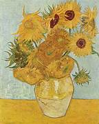
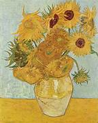

Pinturas famosas
- La noche estrellada
- Los girasoles
- Lirios
(Groot-Zundert, Países Bajos, 1853 - Auvers-sur-Oise, Francia, 1890) Pintor holandés. En las décadas finales del siglo XIX, el impresionismo marcó el inicio de una profunda renovación de las artes plásticas que tendría continuidad en la sucesión de ismos o corrientes del arte contemporáneo. Algunos de los mejores maestros de este periodo, sin embargo, no pueden encasillarse en ninguna escuela, y abrieron por sí solos nuevos caminos; entre ellos, el holandés Vincent van Gogh ocupa una posición señera.
Encarnación del artista torturado e incomprendido, Van Gogh no llegó a vender más que uno de aquellos centenares de cuadros suyos que actualmente alcanzan desorbitadas cotizaciones en las subastas. El reconocimiento de su obra no empezó hasta un año después de su muerte, a raíz de una exposición retrospectiva organizada por el Salón de los Independientes; en nuestros días, Van Gogh es considerado unánimemente uno de los grandes genios de la pintura moderna. Su producción ejerció una influencia decisiva en todo el arte del siglo XX, especialmente en el fauvismo y el expresionismo; y tras más de un siglo de experimentos artísticos, la pincelada tosca y atormentada del artista holandés, alimentada por el vigor de su pasión interior, conserva toda su fascinante fuerza expresiva.
 

Mi primer sitio web, hecho con amor en el bootcamp de technolochicas